32.5. Scikit-learn demo notebooks#
The Gaussian Process for Machine Learning page on the scikit-learn website is a great source of code and documentation and examples for GPs.
Here we have adapted their demonstration notebooks for:
One-dimensional GP regression. Compares noise-free (interpolation) and noisy (regression) for a one-dimensional function (which can be easily changed). An RBF kernel is the default, but this is exchangeable for any of the standard sklearn kernels. A maximum likelihood fit determines the hyperparameters (so it might fail to find a good solution, but the hyperparameter values are given so this can be diagnosed).
Prior and posterior Gaussian process for different kernels. This example illustrates the prior and posterior of the Scikit-learn class
GaussianProcessRegressorwith different kernels. Mean, standard deviation, and 5 samples are shown for both prior and posterior distributions.
We also have additional demo notebooks
Demonstration: Gaussian Process Regression, which builds an RBF-based kernel (with signal scale and noise term), fits the GP on a subset (e.g., every 3rd point), predicts mean and uncertainty on a target grid or the full input, plots mean ±2σ and data, and computes simple validation metrics.
Exercise: Gaussian Processes, which build RBF kernels with signal variance and length-scale, fit GaussianProcessRegressor with a white-noise term, predict posterior mean and uncertainty, plot mean ±2σ and data, examine setting hyperparameters explicitly vs. optimizing by LML.
Gaussian Processes Exercises, which build RBF kernels and visualize samples, fit a GP to 1D data (train/test split), plot the posterior mean and ±2σ band, apply the workflow to a small dataset.
One-dimensional GP regression#
A simple one-dimensional regression example computed in two different ways:
A noise-free case
A noisy case with known noise-level per datapoint
In both cases, the kernel’s parameters are estimated using the maximum likelihood principle.
The figures illustrate the interpolating property of the Gaussian Process model as well as its probabilistic nature in the form of a pointwise 95% confidence interval.
Note that alpha is a parameter to control the strength of the Tikhonov
regularization on the assumed training points’ covariance matrix.
Dataset generation#
We will start by generating a synthetic dataset. The true generative process is defined as \(f(x) = x \sin(x)\) (but you can change the function as desired).
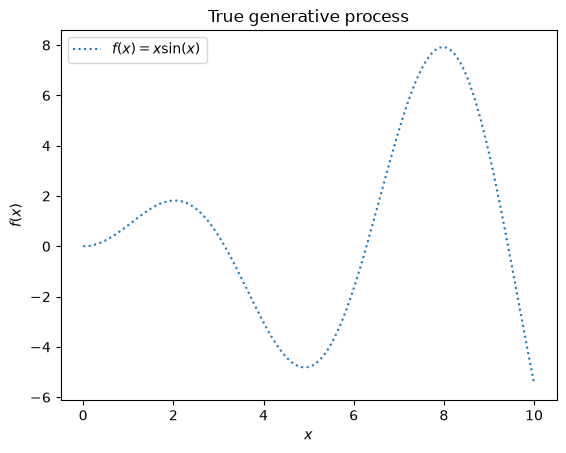
We will use this dataset in the next experiment to illustrate how Gaussian Process regression is working.
Example with noise-free target#
In this first example, we will use the true generative process without adding any noise. For training the Gaussian Process regression, we will only select few samples.
Now, we fit a Gaussian process on these few training data samples. We will use a radial basis function (RBF) kernel and a constant parameter to fit the amplitude.
5.02**2 * RBF(length_scale=1.43)
After fitting our model, we see that the hyperparameters of the kernel have been optimized. Now, we will use our kernel to compute the mean prediction of the full dataset and plot the 95% confidence interval.
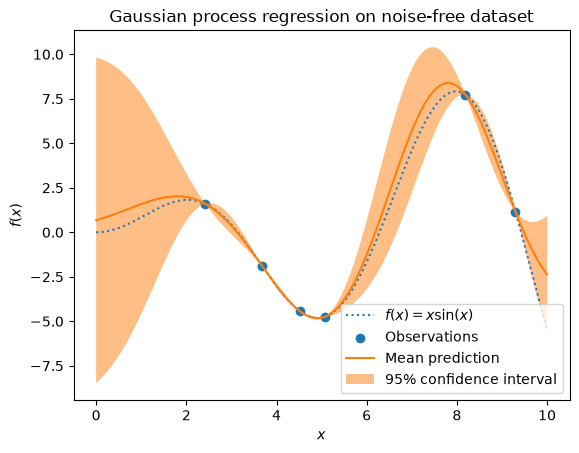
We see that for a prediction made on a data point close to the one from the training set, the 95% confidence has a small amplitude. Whenever a sample falls far from training data, our model’s prediction is less accurate and the model prediction is less precise (higher uncertainty).
Example with noisy targets#
We can repeat a similar experiment adding an additional noise to the target this time. It will allow seeing the effect of the noise on the fitted model.
We add some random Gaussian noise to the target with an arbitrary standard deviation.
We create a similar Gaussian process model. In addition to the kernel, this
time, we specify the parameter alpha which can be interpreted as the
variance of a Gaussian noise.
Let’s plot the mean prediction and the uncertainty region as before.
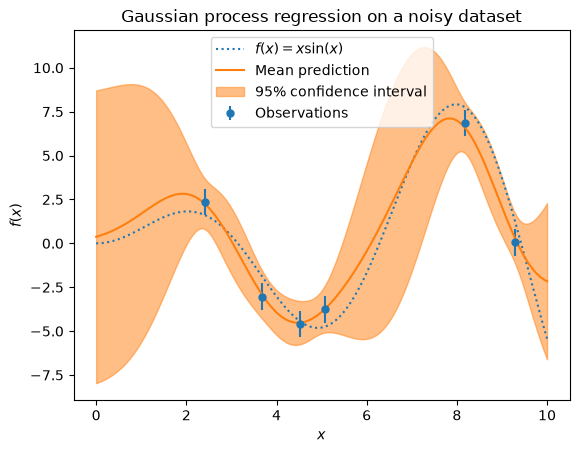
The noise affects the predictions close to the training samples: the predictive uncertainty near to the training samples is larger because we explicitly model a given level target noise independent of the input variable.
Prior and posterior Gaussian process for different kernels#
This example illustrates the prior and posterior of the
class GaussianProcessRegressor with different
kernels. Mean, standard deviation, and 5 samples are shown for both prior
and posterior distributions.
Here, we only give some illustration. To know more about kernels’ formulation, refer to the sklearn users guide.
# Authors: Jan Hendrik Metzen <jhm@informatik.uni-bremen.de>
# Guillaume Lemaitre <g.lemaitre58@gmail.com>
# License: BSD 3 clause
Helper function#
Before presenting each individual kernel available for Gaussian processes, we will define an helper function allowing us plotting samples drawn from the Gaussian process.
This function will take a
GaussianProcessRegressor model and will
drawn sample from the Gaussian process. If the model was not fit, the samples
are drawn from the prior distribution while after model fitting, the samples are
drawn from the posterior distribution.
import matplotlib.pyplot as plt
import numpy as np
def plot_gpr_samples(gpr_model, n_samples, ax):
"""Plot samples drawn from the Gaussian process model.
If the Gaussian process model is not trained then the drawn samples are
drawn from the prior distribution. Otherwise, the samples are drawn from
the posterior distribution. Be aware that a sample here corresponds to a
function.
Parameters
----------
gpr_model : `GaussianProcessRegressor`
A :class:`~sklearn.gaussian_process.GaussianProcessRegressor` model.
n_samples : int
The number of samples to draw from the Gaussian process distribution.
ax : matplotlib axis
The matplotlib axis where to plot the samples.
"""
x = np.linspace(0, 5, 100)
X = x.reshape(-1, 1)
y_mean, y_std = gpr_model.predict(X, return_std=True)
y_samples = gpr_model.sample_y(X, n_samples)
for idx, single_prior in enumerate(y_samples.T):
ax.plot(
x,
single_prior,
linestyle="--",
alpha=0.7,
label=f"Sampled function #{idx + 1}",
)
ax.plot(x, y_mean, color="black", label="Mean")
ax.fill_between(
x,
y_mean - y_std,
y_mean + y_std,
alpha=0.1,
color="black",
label=r"$\pm$ 1 std. dev.",
)
ax.set_xlabel("x")
ax.set_ylabel("y")
ax.set_ylim([-3, 3])
Dataset and Gaussian process generation#
We will create a training dataset that we will use in the different sections.
rng = np.random.RandomState(4)
X_train = rng.uniform(0, 5, 10).reshape(-1, 1)
y_train = np.sin((X_train[:, 0] - 2.5) ** 2)
n_samples = 5
X_true = np.linspace(start=0, stop=5, num=1_000).reshape(-1, 1)
y_true = np.squeeze(np.sin((X_true - 2.5) ** 2))
plt.plot(X_true, y_true, label=r"$f(x) = \sin^2(x-2.5)$", linestyle="dotted")
plt.plot(X_train,y_train,'.', color='red')
plt.legend()
plt.xlabel("$x$")
plt.ylabel("$f(x)$")
plt.ylim(-3,3)
_ = plt.title("True generative process")
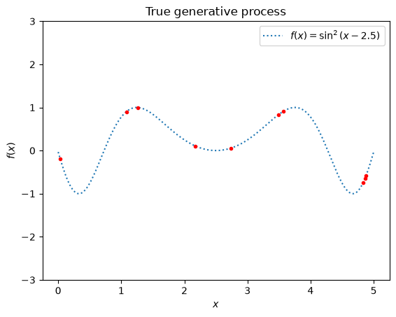
Kernel cookbook#
In this section, we illustrate some samples drawn from the prior and posterior distributions of the Gaussian process with different kernels.
Radial Basis Function kernel#
from sklearn.gaussian_process import GaussianProcessRegressor
from sklearn.gaussian_process.kernels import RBF
kernel = 1.0 * RBF(length_scale=1.0, length_scale_bounds=(1e-1, 10.0))
gpr = GaussianProcessRegressor(kernel=kernel, random_state=0)
fig, axs = plt.subplots(nrows=2, sharex=True, sharey=True, figsize=(10, 8))
# plot prior
plot_gpr_samples(gpr, n_samples=n_samples, ax=axs[0])
axs[0].set_title("Samples from prior distribution")
# plot posterior
gpr.fit(X_train, y_train)
plot_gpr_samples(gpr, n_samples=n_samples, ax=axs[1])
axs[1].scatter(X_train[:, 0], y_train, color="red", zorder=10, label="Observations")
axs[1].plot(X_true, y_true, label="true", linestyle="dotted")
axs[1].legend(bbox_to_anchor=(1.05, 1.5), loc="upper left")
axs[1].set_title("Samples from posterior distribution")
fig.suptitle("Radial Basis Function kernel", fontsize=18)
plt.tight_layout()
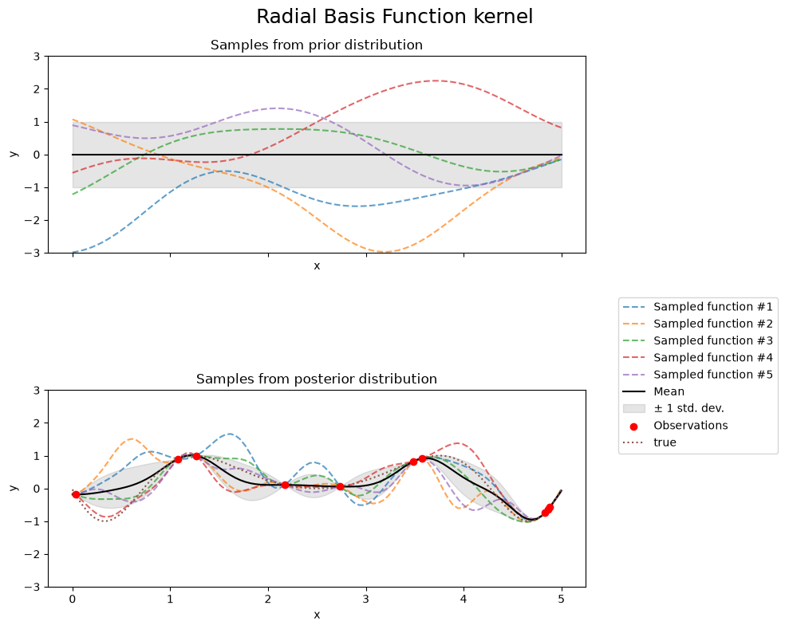
print(f"Kernel parameters before fit:\n{kernel})")
print(
f"Kernel parameters after fit: \n{gpr.kernel_} \n"
f"Log-likelihood: {gpr.log_marginal_likelihood(gpr.kernel_.theta):.3f}"
)
Kernel parameters before fit:
1**2 * RBF(length_scale=1))
Kernel parameters after fit:
0.594**2 * RBF(length_scale=0.279)
Log-likelihood: -0.067
Kernel parameters before fit:
1**2 * RBF(length_scale=1))
Kernel parameters after fit:
0.594**2 * RBF(length_scale=0.279)
Log-likelihood: -0.067
Rational Quadratic kernel#
from sklearn.gaussian_process.kernels import RationalQuadratic
kernel = 1.0 * RationalQuadratic(length_scale=1.0, alpha=0.1, alpha_bounds=(1e-5, 1e15))
gpr = GaussianProcessRegressor(kernel=kernel, random_state=0)
fig, axs = plt.subplots(nrows=2, sharex=True, sharey=True, figsize=(10, 8))
# plot prior
plot_gpr_samples(gpr, n_samples=n_samples, ax=axs[0])
axs[0].set_title("Samples from prior distribution")
# plot posterior
gpr.fit(X_train, y_train)
plot_gpr_samples(gpr, n_samples=n_samples, ax=axs[1])
axs[1].scatter(X_train[:, 0], y_train, color="red", zorder=10, label="Observations")
axs[1].plot(X_true, y_true, label="true", linestyle="dotted")
axs[1].legend(bbox_to_anchor=(1.05, 1.5), loc="upper left")
axs[1].set_title("Samples from posterior distribution")
fig.suptitle("Rational Quadratic kernel", fontsize=18)
plt.tight_layout()
/usr/share/miniconda3/envs/2025-book-env/lib/python3.11/site-packages/sklearn/gaussian_process/_gpr.py:530: RuntimeWarning: covariance is not symmetric positive-semidefinite.
y_samples = rng.multivariate_normal(y_mean, y_cov, n_samples).T
print(f"Kernel parameters before fit:\n{kernel})")
print(
f"Kernel parameters after fit: \n{gpr.kernel_} \n"
f"Log-likelihood: {gpr.log_marginal_likelihood(gpr.kernel_.theta):.3f}"
)
Kernel parameters before fit:
1**2 * RationalQuadratic(alpha=0.1, length_scale=1))
Kernel parameters after fit:
0.594**2 * RationalQuadratic(alpha=7.78e+07, length_scale=0.279)
Log-likelihood: -0.067
Kernel parameters before fit:
1**2 * RationalQuadratic(alpha=0.1, length_scale=1))
Kernel parameters after fit:
0.594**2 * RationalQuadratic(alpha=3.93e+05, length_scale=0.279)
Log-likelihood: -0.067
Exp-Sine-Squared kernel#
from sklearn.gaussian_process.kernels import ExpSineSquared
kernel = 1.0 * ExpSineSquared(
length_scale=1.0,
periodicity=3.0,
length_scale_bounds=(0.1, 10.0),
periodicity_bounds=(1.0, 10.0),
)
gpr = GaussianProcessRegressor(kernel=kernel, random_state=0)
fig, axs = plt.subplots(nrows=2, sharex=True, sharey=True, figsize=(10, 8))
# plot prior
plot_gpr_samples(gpr, n_samples=n_samples, ax=axs[0])
axs[0].set_title("Samples from prior distribution")
# plot posterior
gpr.fit(X_train, y_train)
plot_gpr_samples(gpr, n_samples=n_samples, ax=axs[1])
axs[1].scatter(X_train[:, 0], y_train, color="red", zorder=10, label="Observations")
axs[1].plot(X_true, y_true, label="true", linestyle="dotted")
axs[1].legend(bbox_to_anchor=(1.05, 1.5), loc="upper left")
axs[1].set_title("Samples from posterior distribution")
fig.suptitle("Exp-Sine-Squared kernel", fontsize=18)
plt.tight_layout()
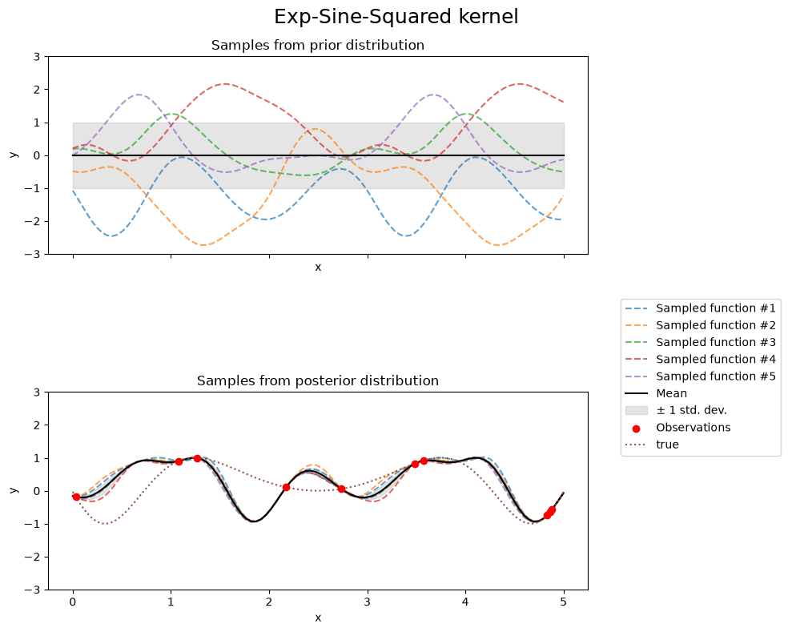
print(f"Kernel parameters before fit:\n{kernel})")
print(
f"Kernel parameters after fit: \n{gpr.kernel_} \n"
f"Log-likelihood: {gpr.log_marginal_likelihood(gpr.kernel_.theta):.3f}"
)
Kernel parameters before fit:
1**2 * ExpSineSquared(length_scale=1, periodicity=3))
Kernel parameters after fit:
0.799**2 * ExpSineSquared(length_scale=0.791, periodicity=2.87)
Log-likelihood: 3.394
Kernel parameters before fit:
1**2 * ExpSineSquared(length_scale=1, periodicity=3))
Kernel parameters after fit:
0.799**2 * ExpSineSquared(length_scale=0.791, periodicity=2.87)
Log-likelihood: 3.394
Dot-product kernel#
from sklearn.gaussian_process.kernels import ConstantKernel, DotProduct
kernel = ConstantKernel(0.1, (0.01, 10.0)) * (
DotProduct(sigma_0=1.0, sigma_0_bounds=(0.1, 10.0)) ** 2
)
gpr = GaussianProcessRegressor(kernel=kernel, random_state=0)
fig, axs = plt.subplots(nrows=2, sharex=True, sharey=True, figsize=(10, 8))
# plot prior
plot_gpr_samples(gpr, n_samples=n_samples, ax=axs[0])
axs[0].set_title("Samples from prior distribution")
# plot posterior
gpr.fit(X_train, y_train)
plot_gpr_samples(gpr, n_samples=n_samples, ax=axs[1])
axs[1].scatter(X_train[:, 0], y_train, color="red", zorder=10, label="Observations")
axs[1].plot(X_true, y_true, label="true", linestyle="dotted")
axs[1].legend(bbox_to_anchor=(1.05, 1.5), loc="upper left")
axs[1].set_title("Samples from posterior distribution")
fig.suptitle("Dot-product kernel", fontsize=18)
plt.tight_layout()
/usr/share/miniconda3/envs/2025-book-env/lib/python3.11/site-packages/sklearn/gaussian_process/_gpr.py:667: ConvergenceWarning: lbfgs failed to converge after 2 iteration(s) (status=2):
ABNORMAL:
You might also want to scale the data as shown in:
https://scikit-learn.org/stable/modules/preprocessing.html
_check_optimize_result("lbfgs", opt_res)
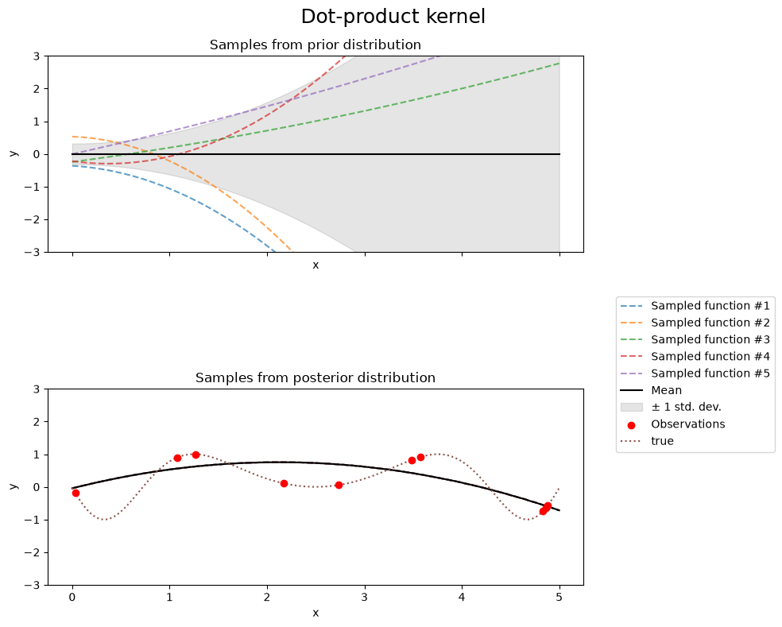
print(f"Kernel parameters before fit:\n{kernel})")
print(
f"Kernel parameters after fit: \n{gpr.kernel_} \n"
f"Log-likelihood: {gpr.log_marginal_likelihood(gpr.kernel_.theta):.3f}"
)
Kernel parameters before fit:
0.316**2 * DotProduct(sigma_0=1) ** 2)
Kernel parameters after fit:
2.36**2 * DotProduct(sigma_0=0.134) ** 2
Log-likelihood: -7943459458.877
Kernel parameters before fit:
0.316**2 * DotProduct(sigma_0=1) ** 2)
Kernel parameters after fit:
0.997**2 * DotProduct(sigma_0=10) ** 2
Log-likelihood: -7858765344.362
Matérn kernel#
from sklearn.gaussian_process.kernels import Matern
kernel = 1.0 * Matern(length_scale=1.0, length_scale_bounds=(1e-1, 10.0), nu=1.5)
gpr = GaussianProcessRegressor(kernel=kernel, random_state=0)
fig, axs = plt.subplots(nrows=2, sharex=True, sharey=True, figsize=(10, 8))
# plot prior
plot_gpr_samples(gpr, n_samples=n_samples, ax=axs[0])
axs[0].set_title("Samples from prior distribution")
# plot posterior
gpr.fit(X_train, y_train)
plot_gpr_samples(gpr, n_samples=n_samples, ax=axs[1])
axs[1].scatter(X_train[:, 0], y_train, color="red", zorder=10, label="Observations")
axs[1].plot(X_true, y_true, label="true", linestyle="dotted")
axs[1].legend(bbox_to_anchor=(1.05, 1.5), loc="upper left")
axs[1].set_title("Samples from posterior distribution")
fig.suptitle("Matérn kernel", fontsize=18)
plt.tight_layout()
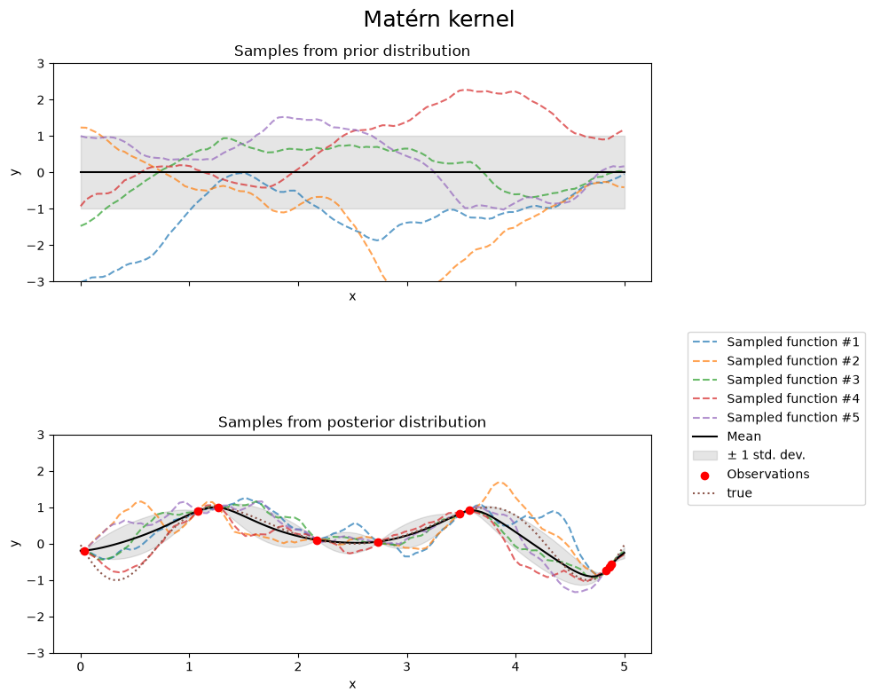
print(f"Kernel parameters before fit:\n{kernel})")
print(
f"Kernel parameters after fit: \n{gpr.kernel_} \n"
f"Log-likelihood: {gpr.log_marginal_likelihood(gpr.kernel_.theta):.3f}"
)
Kernel parameters before fit:
1**2 * Matern(length_scale=1, nu=1.5))
Kernel parameters after fit:
0.609**2 * Matern(length_scale=0.484, nu=1.5)
Log-likelihood: -1.185
Kernel parameters before fit:
1**2 * Matern(length_scale=1, nu=1.5))
Kernel parameters after fit:
0.609**2 * Matern(length_scale=0.484, nu=1.5)
Log-likelihood: -1.185
Demonstration: Gaussian Process Regression#
This notebook uses scikit-learn with the workflow:
build an RBF-based kernel (with signal scale and noise term),
fit the GP on a subset (e.g., every 3rd point),
predict mean and uncertainty on a target grid or the full input,
plot mean ±2σ and data,
compute simple validation metrics.
# Imports
import numpy as np
import matplotlib.pyplot as plt
from sklearn.gaussian_process import GaussianProcessRegressor
from sklearn.gaussian_process.kernels import RBF, ConstantKernel as C, WhiteKernel
np.random.seed(1234)
x = np.linspace(0, 10, 60)
f = np.sin(x) + 0.2*np.cos(3*x)
y = f + 0.2*np.random.randn(x.size)
# Ensure shapes (n,1) and (n,)
X = np.asarray(x).reshape(-1, 1)
y = np.asarray(y).reshape(-1)
print('Data shapes -> X:', X.shape, ' y:', y.shape)
Data shapes -> X: (60, 1) y: (60,)
# --- Train/validation split: every 3rd point for train ---
idx = np.arange(X.shape[0])
train_mask = (idx % 3 == 0)
test_mask = ~train_mask
X_train, y_train = X[train_mask], y[train_mask]
X_test, y_test = X[test_mask], y[test_mask]
print('Train size:', X_train.shape[0], ' Test size:', X_test.shape[0])
Train size: 20 Test size: 40
# --- Kernel: signal variance * RBF(length_scale) + white noise ---
kernel = C(1.0, (1e-3, 1e3)) * RBF(length_scale=1.0, length_scale_bounds=(1e-1, 1e3)) + WhiteKernel(noise_level=1e-3, noise_level_bounds=(1e-6, 1e1))
gpr = GaussianProcessRegressor(kernel=kernel, normalize_y=True, random_state=1234, n_restarts_optimizer=9)
print('Initial kernel:', gpr.kernel)
Initial kernel: 1**2 * RBF(length_scale=1) + WhiteKernel(noise_level=0.001)
# --- Fit (replaces GPy: m.optimize(...)) ---
gpr.fit(X_train, y_train)
print('\nOptimized kernel:', gpr.kernel_)
Optimized kernel: 1.03**2 * RBF(length_scale=1.36) + WhiteKernel(noise_level=0.193)
# --- Predict on full X (replaces: yp, vp = m.predict(xp)) ---
y_mean, y_std = gpr.predict(X, return_std=True)
# For test set metrics
from sklearn.metrics import r2_score, mean_absolute_percentage_error
y_pred_test, y_std_test = gpr.predict(X_test, return_std=True)
print('\nValidation:')
print(' R^2 (test):', r2_score(y_test, y_pred_test))
try:
print(' MAPE (test):', mean_absolute_percentage_error(y_test, y_pred_test))
except Exception:
pass
Validation:
R^2 (test): 0.8596309559662767
MAPE (test): 0.44632613843402247
# --- Plot (replaces: m.plot(...)) ---
plt.figure(figsize=(8,6))
# 95% confidence band
plt.fill_between(X.ravel(),
y_mean - 2*y_std,
y_mean + 2*y_std,
alpha=0.2, label='GP ±2σ')
plt.plot(X.ravel(), y_mean, lw=2, label='GP mean')
plt.scatter(X_train.ravel(), y_train, s=25, label='train', zorder=3)
plt.scatter(X_test.ravel(), y_test, s=25, label='test', alpha=0.7, zorder=2)
plt.xlabel('x')
plt.ylabel('y')
plt.title('Gaussian Process Regression (scikit-learn)')
plt.legend()
plt.tight_layout()
plt.show()
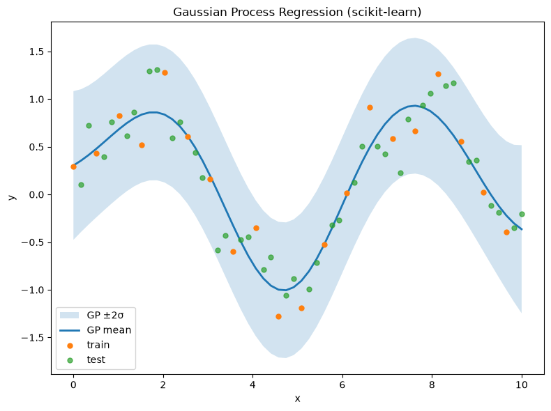
Exercise: Gaussian Processes#
This exercise uses scikit-learn and covers:
building RBF kernels with signal variance and length-scale,
fitting
GaussianProcessRegressorwith a white-noise term,predicting posterior mean and uncertainty,
plotting mean ±2σ and data,
setting hyperparameters explicitly vs. optimizing by LML.
# Imports
import numpy as np
import matplotlib.pyplot as plt
from sklearn.gaussian_process import GaussianProcessRegressor
from sklearn.gaussian_process.kernels import RBF, ConstantKernel as C, WhiteKernel
np.random.seed(1234)
# Synthetic 1D regression data (adapter-friendly)
# If your upstream notebook already defines X,y, this block can be skipped or adapted.
n = 75
X = np.linspace(-2, 2, n).reshape(-1,1)
f = np.sin(2*np.pi*X).ravel()
y = f + 0.15*np.random.randn(n)
print('Data shapes:', X.shape, y.shape)
Data shapes: (75, 1) (75,)
# Fixed hyperparameters (like setting m['rbf.lengthscale']=..., m['Gaussian_noise.variance']=...)
sigma_f2 = 1.0
ell = 0.2
sigma_n2 = 1e-2
kernel_fixed = C(sigma_f2, constant_value_bounds='fixed') * RBF(length_scale=ell, length_scale_bounds='fixed') \
+ WhiteKernel(noise_level=sigma_n2, noise_level_bounds='fixed')
gpr_fixed = GaussianProcessRegressor(kernel=kernel_fixed, normalize_y=True, optimizer=None) # no optimization
gpr_fixed.fit(X, y)
Xg = np.linspace(X.min()-0.5, X.max()+0.5, 400).reshape(-1,1)
m_fixed, s_fixed = gpr_fixed.predict(Xg, return_std=True)
plt.figure(figsize=(8,6))
plt.fill_between(Xg.ravel(), m_fixed-2*s_fixed, m_fixed+2*s_fixed, alpha=0.2, label='±2σ')
plt.plot(Xg, m_fixed, lw=2, label='GP mean (fixed hyperparams)')
plt.scatter(X, y, s=25, label='data')
plt.title('GP (fixed RBF hyperparameters)')
plt.legend(); plt.tight_layout(); plt.show()
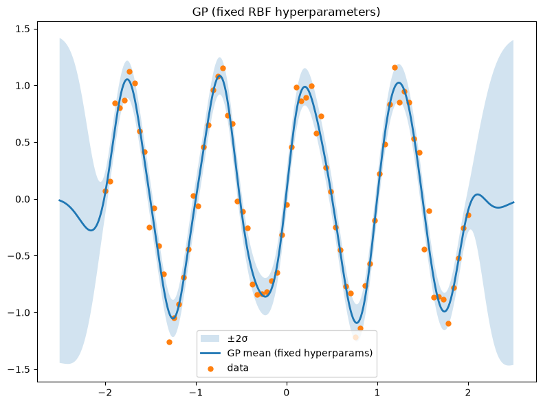
# Optimized hyperparameters (analog of m.optimize())
kernel0 = C(1.0, (1e-3, 1e3)) * RBF(length_scale=0.5, length_scale_bounds=(1e-3, 1e3)) \
+ WhiteKernel(noise_level=1e-2, noise_level_bounds=(1e-6, 1e1))
gpr = GaussianProcessRegressor(kernel=kernel0, normalize_y=True, n_restarts_optimizer=5, random_state=1234)
print('Initial kernel:', gpr.kernel)
gpr.fit(X, y)
print('\nOptimized kernel:', gpr.kernel_)
m_opt, s_opt = gpr.predict(Xg, return_std=True)
plt.figure(figsize=(8,6))
plt.fill_between(Xg.ravel(), m_opt-2*s_opt, m_opt+2*s_opt, alpha=0.2, label='±2σ')
plt.plot(Xg, m_opt, lw=2, label='GP mean (optimized)')
plt.scatter(X, y, s=25, label='data')
plt.title('GP (optimized hyperparameters)')
plt.legend(); plt.tight_layout(); plt.show()
Initial kernel: 1**2 * RBF(length_scale=0.5) + WhiteKernel(noise_level=0.01)
Optimized kernel: 1.31**2 * RBF(length_scale=0.277) + WhiteKernel(noise_level=0.0475)
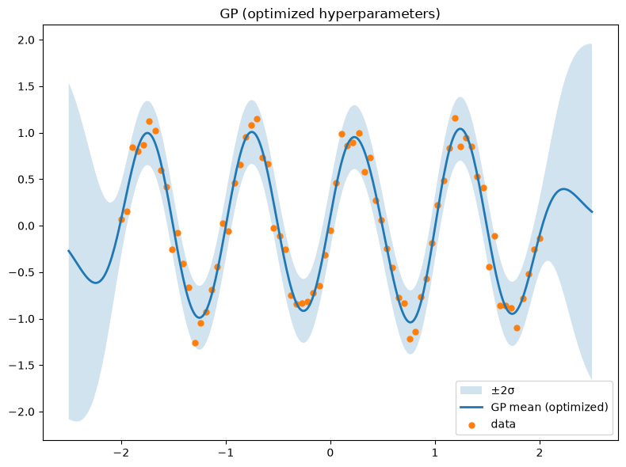
# Optional: full predictive covariance
m_cov, K_cov = gpr.predict(Xg, return_cov=True)
print('Predictive covariance shape:', K_cov.shape)
Predictive covariance shape: (400, 400)
Gaussian Processes Exercises#
Tasks include:
building RBF kernels and visualizing samples,
fitting a GP to 1D data (train/test split),
plotting the posterior mean and ±2σ band,
applying to a small dataset.
# Imports
import numpy as np
import matplotlib.pyplot as plt
from sklearn.gaussian_process import GaussianProcessRegressor
from sklearn.gaussian_process.kernels import RBF, ConstantKernel as C, WhiteKernel
from sklearn.metrics import r2_score, mean_absolute_error
np.random.seed(1234)
# --- Kernel construction & draws from the prior ---
n = 200
X_demo = np.linspace(-2, 2, n).reshape(-1,1)
var, theta = 1.0, 0.2
kernel_demo = C(var) * RBF(length_scale=theta)
# Prior samples: draw f ~ GP(0, K) on the grid
from sklearn.metrics.pairwise import rbf_kernel
K = var * rbf_kernel(X_demo, X_demo, gamma=1.0/(2*theta**2))
samples = np.random.multivariate_normal(mean=np.zeros(n), cov=K + 1e-9*np.eye(n), size=3)
plt.figure(figsize=(8,6))
plt.plot(X_demo, samples.T, alpha=0.8)
plt.title("Prior samples from GP with RBF kernel")
plt.xlabel("x"); plt.ylabel("f(x)")
plt.show()
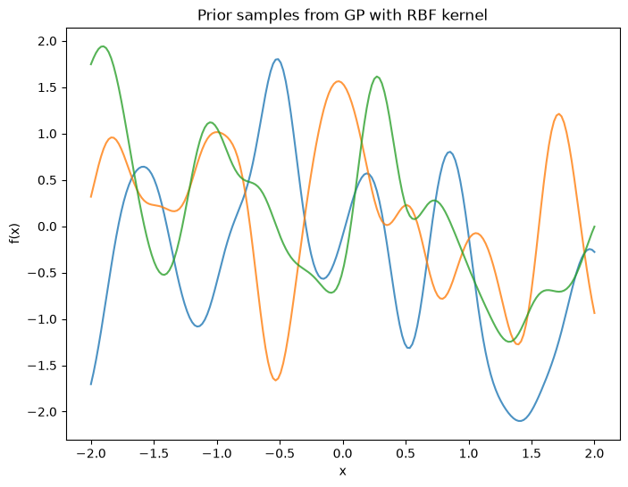
# --- Fit GP on subset and predict on full grid ---
X = np.linspace(-2, 2, 60).reshape(-1,1)
f = np.sin(2*np.pi*X).ravel()
y = f + 0.25*np.random.randn(X.shape[0])
# Train/test split: every 3rd point for training to mimic original
idx = np.arange(X.shape[0])
mask_tr = (idx % 3 == 0)
mask_te = ~mask_tr
X_tr, y_tr = X[mask_tr], y[mask_tr]
X_te, y_te = X[mask_te], y[mask_te]
# Kernel: signal * RBF + noise
kernel = C(1.0, (1e-3, 1e3)) * RBF(length_scale=1.0, length_scale_bounds=(1e-3, 1e3)) + WhiteKernel(noise_level=1e-2, noise_level_bounds=(1e-6, 1e1))
gpr = GaussianProcessRegressor(kernel=kernel, normalize_y=True, n_restarts_optimizer=9, random_state=1234)
print("Initial kernel:", gpr.kernel)
gpr.fit(X_tr, y_tr)
print("\nOptimized kernel:", gpr.kernel_)
# Predict on full X (posterior mean/std)
y_mean, y_std = gpr.predict(X, return_std=True)
# Evaluate on held-out points
y_pred_te, y_std_te = gpr.predict(X_te, return_std=True)
print("\nTest R^2:", r2_score(y_te, y_pred_te))
print("Test MAE:", mean_absolute_error(y_te, y_pred_te))
# Plot
plt.figure(figsize=(8,6))
plt.fill_between(X.ravel(), y_mean-2*y_std, y_mean+2*y_std, alpha=0.2, label="±2σ")
plt.plot(X, y_mean, lw=2, label="GP mean")
plt.scatter(X_tr, y_tr, s=30, label="train")
plt.scatter(X_te, y_te, s=30, label="test", alpha=0.7)
plt.xlabel("x"); plt.ylabel("y")
plt.title("Gaussian Process Regression (scikit-learn)")
plt.legend(); plt.tight_layout(); plt.show()
Initial kernel: 1**2 * RBF(length_scale=1) + WhiteKernel(noise_level=0.01)
Optimized kernel: 1.12**2 * RBF(length_scale=0.22) + WhiteKernel(noise_level=0.0204)
Test R^2: 0.7846195170516508
Test MAE: 0.2832273891509585
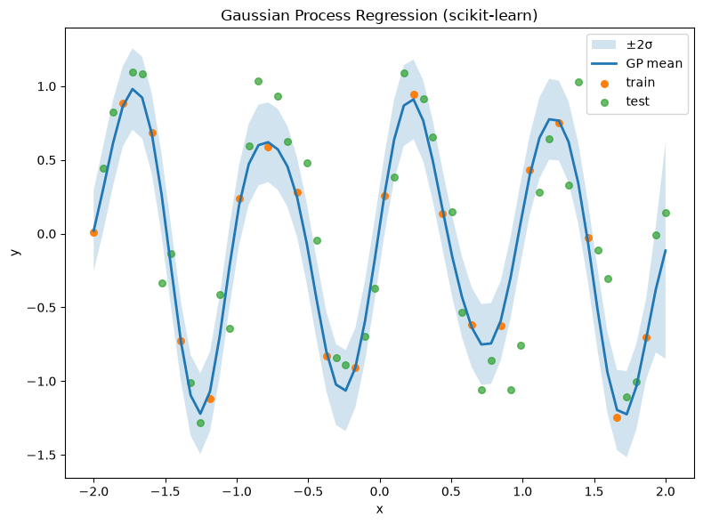
# --- Example dataset ---
# Small inline sample approximating a downward trend (year vs pace)
years = np.array([1896,1900,1904,1908,1912,1920,1924,1928,1932,1936,1948,1952,1956,1960,1964,1968,1972,1976,1980,1984,1988,1992,1996,2000,2004,2008,2012,2016]).reshape(-1,1)
pace = np.array([4.66,4.71,4.79,4.51,4.44,4.39,4.33,4.25,4.23,4.17,4.15,4.08,4.03,3.98,3.95,3.89,3.85,3.81,3.80,3.76,3.71,3.65,3.60,3.56,3.54,3.49,3.48,3.44])
Xo, Yo = years, pace
kernel_o = C(1.0, (1e-3, 1e3)) * RBF(length_scale=20.0, length_scale_bounds=(1e-1, 1e4)) + WhiteKernel(noise_level=1e-3, noise_level_bounds=(1e-6, 1e1))
gpr_o = GaussianProcessRegressor(kernel=kernel_o, normalize_y=True, n_restarts_optimizer=5, random_state=1234)
gpr_o.fit(Xo, Yo)
print("Optimized kernel (Olympic-like):", gpr_o.kernel_)
# Prediction grid
Xg = np.linspace(Xo.min()-4, Xo.max()+4, 400).reshape(-1,1)
Ym, Ys = gpr_o.predict(Xg, return_std=True)
plt.figure(figsize=(8,6))
plt.fill_between(Xg.ravel(), Ym-2*Ys, Ym+2*Ys, alpha=0.2, label="±2σ")
plt.plot(Xg, Ym, lw=2, label="GP mean")
plt.scatter(Xo, Yo, s=30, label="data")
plt.xlabel("year"); plt.ylabel("pace (min/km)")
plt.title("GP fit to Olympic-like marathon data (scikit-learn)")
plt.legend(); plt.tight_layout(); plt.show()
Optimized kernel (Olympic-like): 5.22**2 * RBF(length_scale=277) + WhiteKernel(noise_level=0.0179)
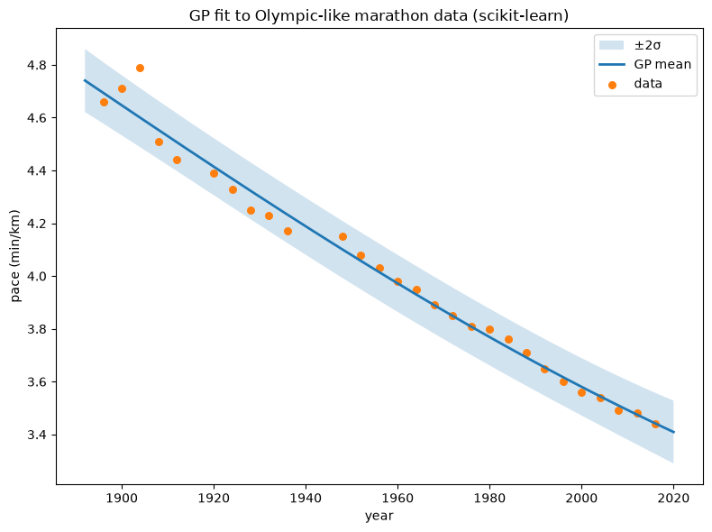